Every project, every DAW, one place
DAW Project Manager finds the music projects on your drives — whatever DAW made them — and keeps them in one library: what's inside each one (tempo, key, plug-ins, MIDI), where it stands, what's left to do, and the mixdown to listen to. Free and open source, on Windows, macOS, Linux and Android.
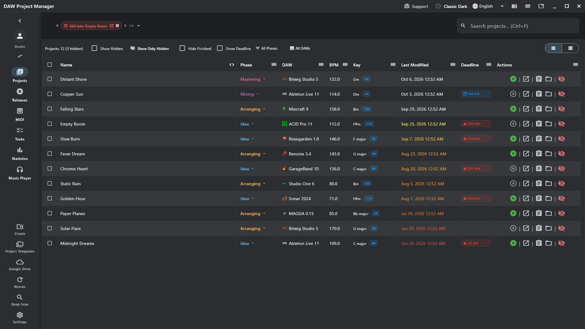
Install
Free and open source. Pick your platform from the latest release.
Windows
Microsoft Store, or the installer .exe. Not yet code-signed: More info → Run anyway. Installing a newer one upgrades in place.
macOS
Open the .dmg, drag the app to Applications. If macOS warns: System Settings → Privacy & Security → Open Anyway.
Linux
AppImage (chmod +x, then run — updates itself), Flatpak (from Flathub) or .tar.gz. The Flatpak has no Google Drive sync: use local backup.

Android
In closed testing on Google Play. Adds playlists and deadline notifications.
First launch
A short wizard sets language, theme, which tabs show, your first project folder (or a restore from Google Drive) and whether the app starts with your computer. All of it can be changed later in Settings.
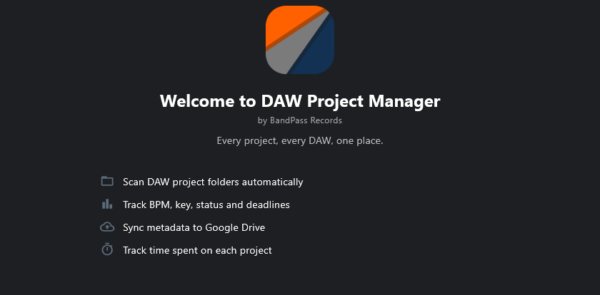
One step picks how a project's page is laid out, with a preview of each: Sections, one part of the page at a time from a rail on the left, or Classic, everything in one long scroll.
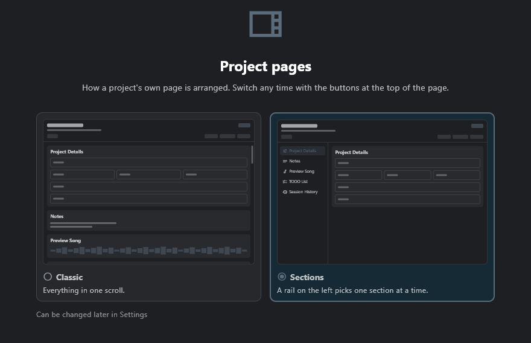
Project folders
Point the app at the folders your projects live in — it finds every project inside, however deep. Settings → Project Folders → Add Folder.
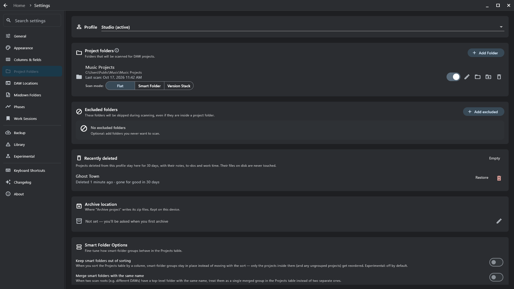
- Add the top folder (
~/Music), not each song's. - Excluded folders are skipped — templates, sample libraries.
- Each folder has a scan mode: Flat (every project file is a project), Smart Folder (one subfolder per song) or Version Stack (one subfolder per song, its files stacked as versions).
- Edit any profile's folders from here — the profile picker at the top.
Scanning
Two steps, so a big library shows up in seconds.
- Scan finds the project files — on launch, and whenever you press Ctrl R.
- Deep Scan reads inside them: tempo, key, DAW version, tracks, plug-ins, MIDI. Run it from the side rail, or Extract on one project. It isn't automatic: on a cloud drive, reading means downloading.
Dashboard
Every project you have, as a table (as in the overview) or as cards — the same list either way. Sort by any column; choose and order the columns.
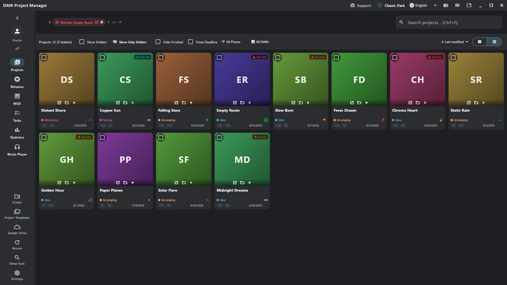
- Row buttons: play the mixdown, open in the DAW, open the project's page, open its folder, hide it.
- Right-click a project for everything else: move, archive, stack, delete…
- Change the phase straight from its cell.
- Pin projects to the bar at the top to pick up where you left off.
Search & filters
Ctrl F and type. Search looks at a project's name, your notes and the DAW's, its markers, plug-ins, instrumentation, tags and custom fields — and forgives typos.
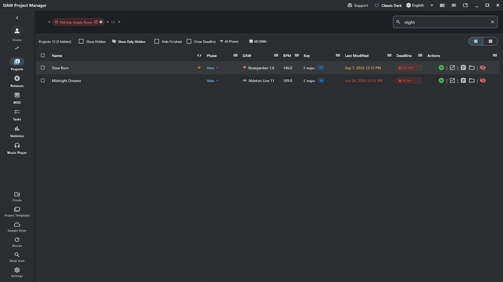
The DAW, the phase and the deadline aren't searched — they have filters of their own, beside the search, and filters stack: All DAWs, All Phases, Show Deadline, Hide Finished, only projects with MIDI.
Many at once
Tick a few projects and a bar appears: hide, read their metadata, change their phase, make a release of them, stack them as versions, archive them.
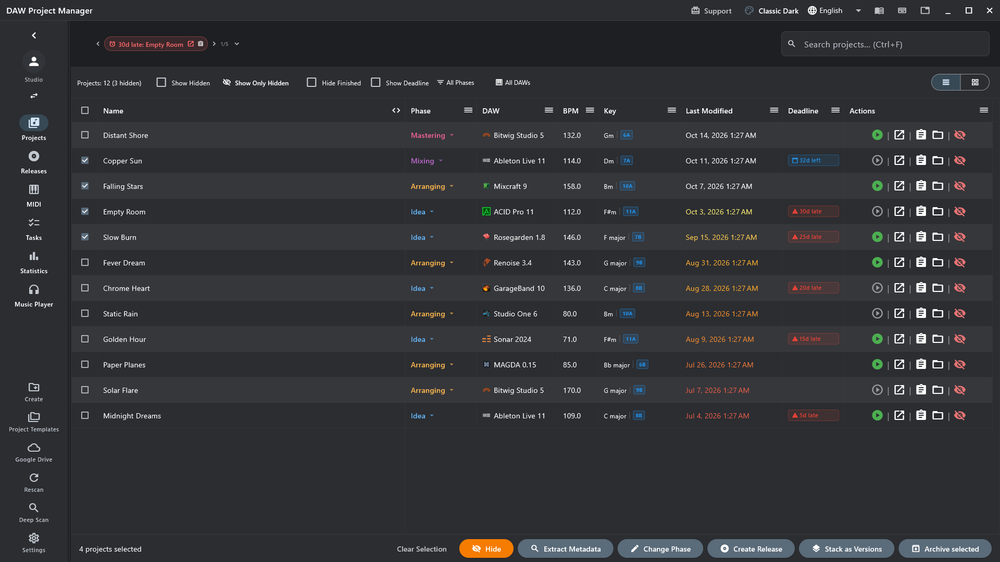
A project's page
Double-click a project. Everything you edit saves as you type. The rail on the left shows one section at a time; the two buttons at the top left switch to Classic, the whole page in one scroll.
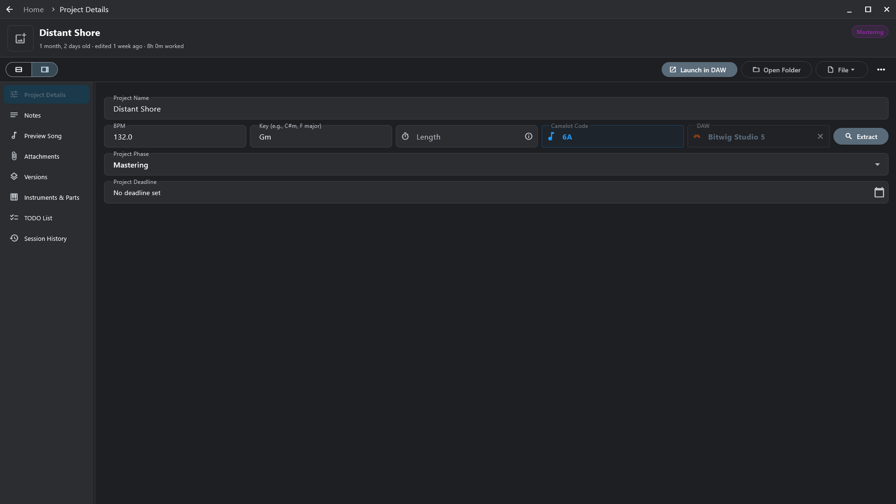
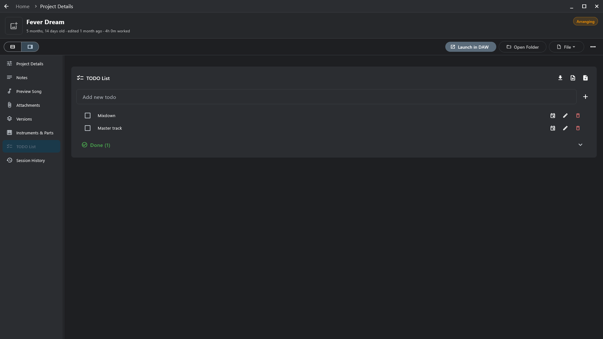
- Details — name, tempo, key (with its Camelot code), phase, deadline, notes, your own custom fields.
- Preview song — the latest mixdown, found on its own in your export folders (Settings → Mixdown Folders) or picked by hand.
- To-dos, attached files and links, cover art and colour, tags.
- Inside the project — tracks, plug-ins and MIDI clips, after a deep scan.
- Timeline — every phase change, so you can see how long a song sat in mixing.

Phases
Where each song stands — Idea, Arranging, Mixing, Mastering, Finished out of the box. Rename them, add your own, colour and reorder them in Settings → Phases.
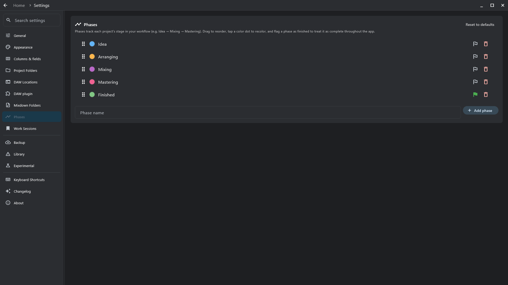
Versions
Song.flp, Song_2.flp, Song_3.flp: one song. Stack them and the library shows it once, with one set of notes, to-dos and work time.
- Select the versions → Stack as Versions, or set a folder's scan mode to Version Stack and every song folder stacks itself.
- Unstacking gives each version back exactly what it had.
Tasks
Every open to-do across every project, busiest first. Tick them off here, or jump to the project.
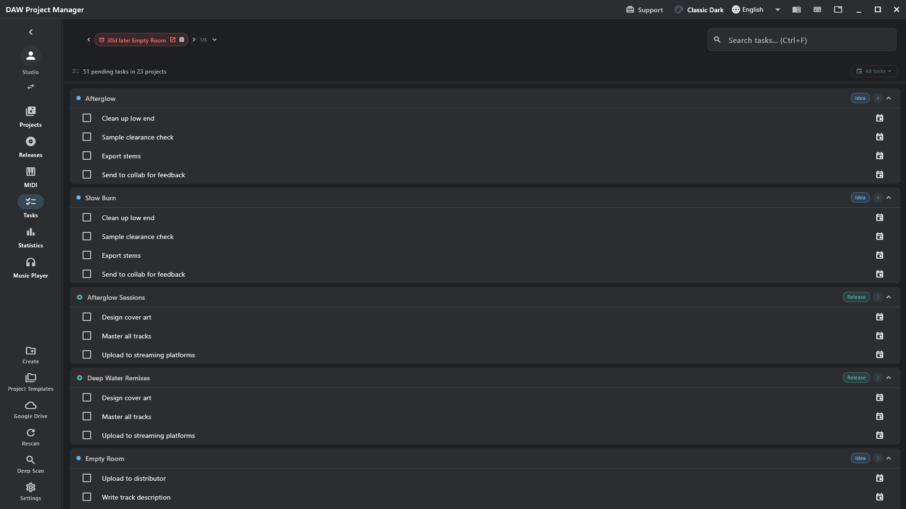
Releases
An EP, an album, a single: its tracks, artwork, date, to-dos and files in one place.
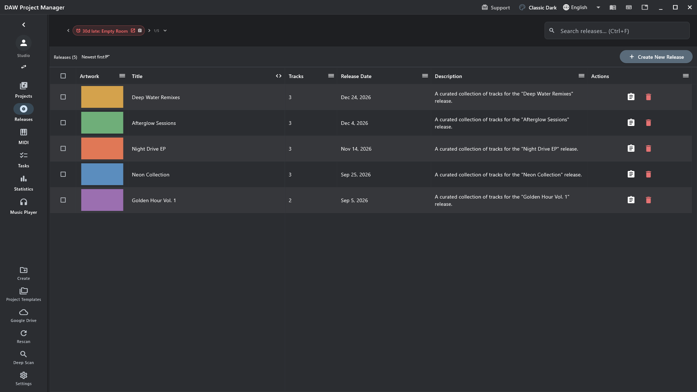
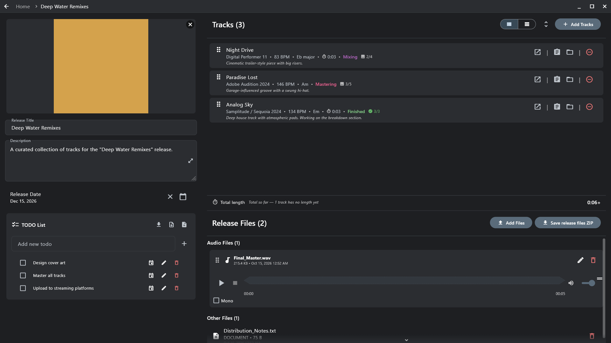
Templates
Start a new song from a template — DAW, tempo, key and starter files ready — or add a ready-made checklist to a project's to-dos.


Statistics
Where your songs are, where they get stuck, how much you finish.
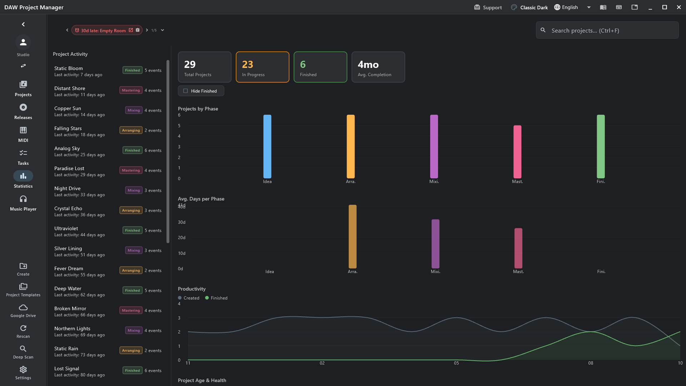
Work sessions
How long has this song taken? In Session Mode you start a session on a project, and the time you work on it adds up: per session, and in total.
- Switch it on — Settings → Work Sessions → Session mode. Off by default; in Normal Mode, launching a project just opens it in its DAW.
- Start a session — the bookmark button on a project's row (or S), then Start Session. The app asks before starting, switching or ending one, so the timer always means what you think.
- Work — the session bar at the top shows the song, its total so far and this session's time, with pause and stop. Its buttons open the project in its DAW or its page.
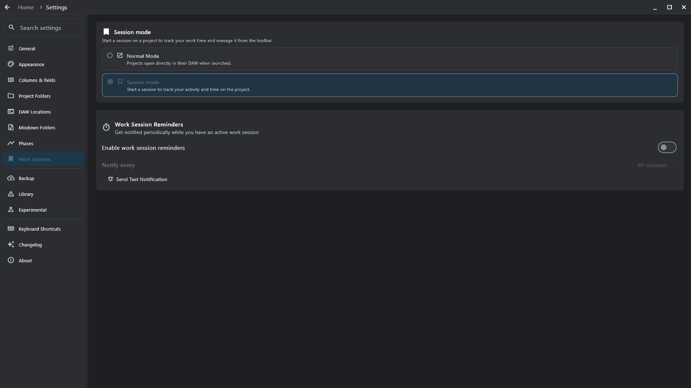
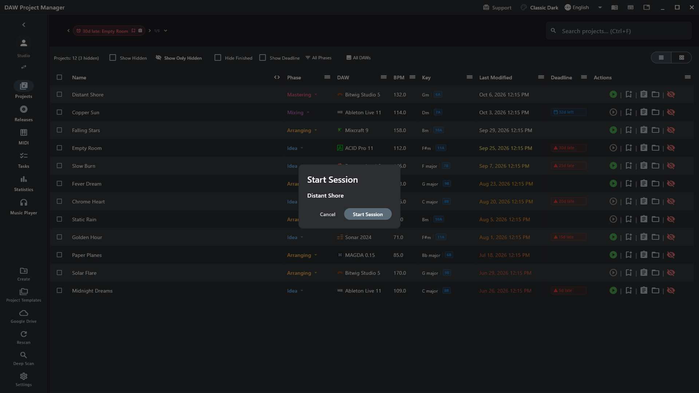
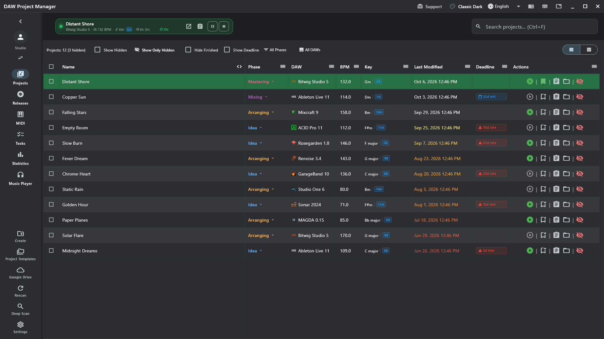
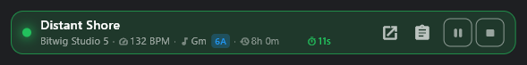
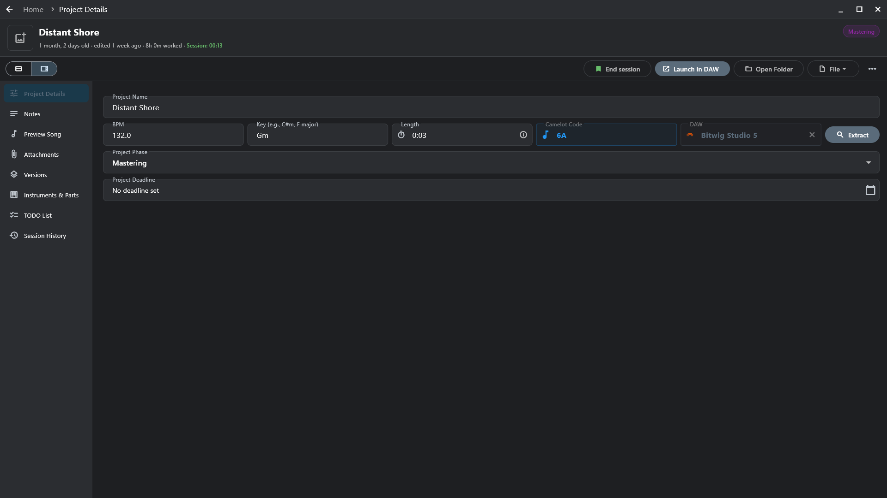
Every session, on record
A project's Session History lists each session — the day, when it started and ended, the phase the song was in, how long — and adds them up, then by phase: how long the song spent in arranging, in mixing. A session timed wrong can be edited or removed.
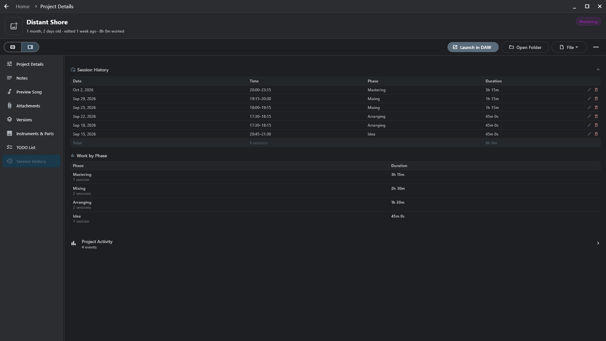
- A version stack adds up the time of all its versions.
- Reminders (Settings → Work Sessions) notify you at the interval you choose while a session runs, so one isn't left running by mistake.
MIDI clips
The riffs, chords and drum patterns in every project — Ableton Live, Cubase, Nuendo, FL Studio, Reaper — without opening the DAW.
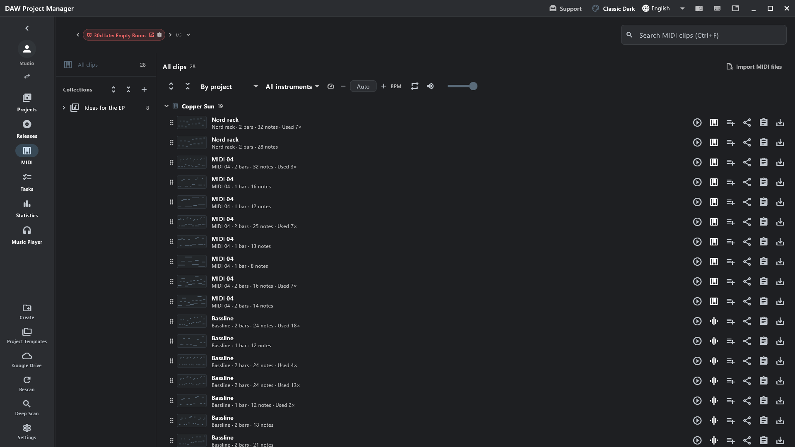
- A deep scan reads them; each clip once, however often a project uses it.
- Play any clip through the built-in synth, at any tempo, with an instrument guessed from its track.
- Drag a clip into your DAW or a folder as a
.mid— tempo and key included.
Collections
Your own sets of clips, in folders — copies, so they keep working whatever happens to the projects. Import .mid files from anywhere, name files by a scheme, export or share the whole set.
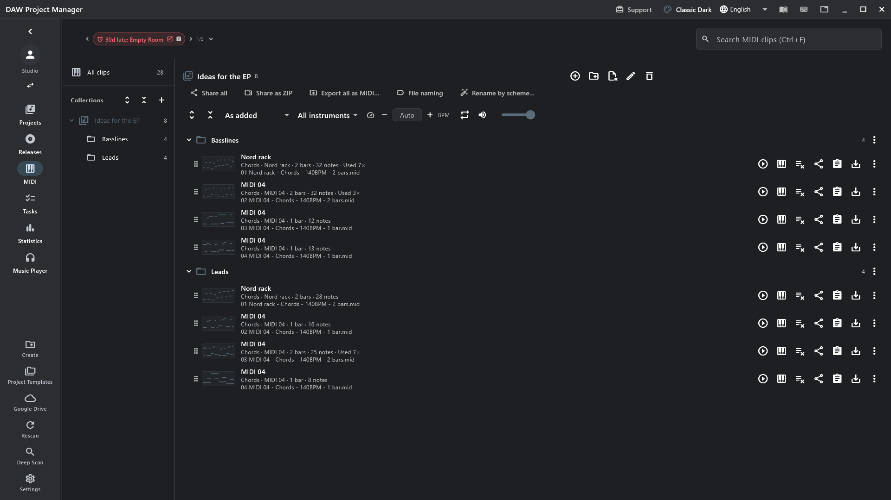
Piano roll
Click a clip's thumbnail. Edit like a DAW's key editor — select, range, eraser and pencil tools, quantize, duplicate, transpose, velocity and controller lanes — and save the result as a new clip. ? lists every shortcut.
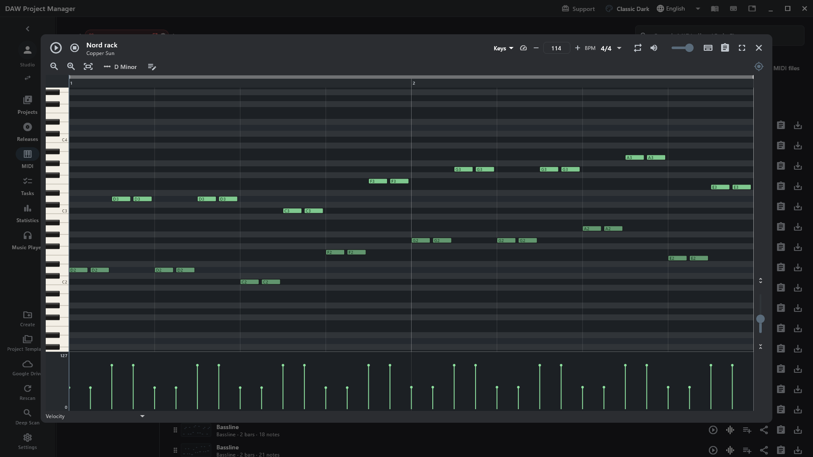
Music player
All your mixdowns in one player. The key wheel suggests what mixes into the song playing; add a to-do at the exact second you hear something.
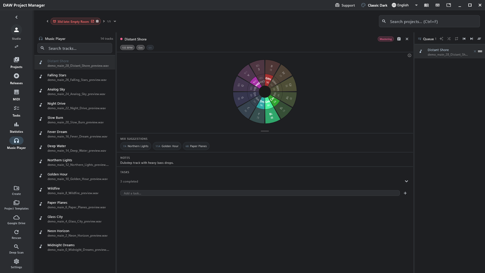
Sharing
Send a mixdown to Messages, WhatsApp, email… from its project or the player. WAV and AIFF are converted first where an app won't take them (AAC on macOS, MP3 on Windows); Share as ZIP sends the original.
Sample pack
Every sample your projects use, copied into one folder sorted by kind — kicks, snares, loops — with a report of which songs use what. Settings → Experimental → Sample pack from your projects.
- Each file once, however many projects copied it. Your own recordings and bounces stay out unless you ask.
- Run it again later: only what's new is added.
Google Drive
Your library on every machine: details, to-dos, releases, MIDI, mixdowns and artwork. Your project files themselves stay where they are.
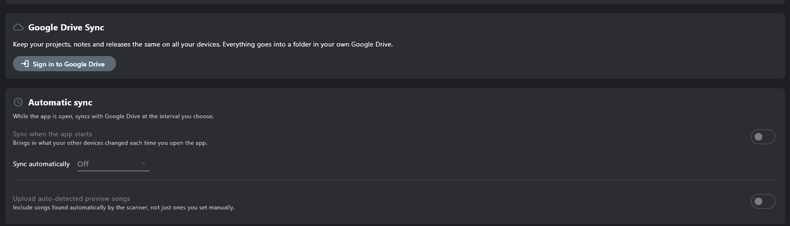
- Side rail → Google Drive → Sign in to Google Drive. The app only sees its own folder in your Drive.
- Sync merges both ways: what you did on each machine is kept, deletions included.
- Sync on start, or every 30 minutes to daily — even from the tray.
- Every sync keeps the previous backup, to go back to.
Local backup
One file with your whole library — the way to back up without Google Drive, and the only one in the Flatpak. Settings → Backup → Export Backup / Import Backup.
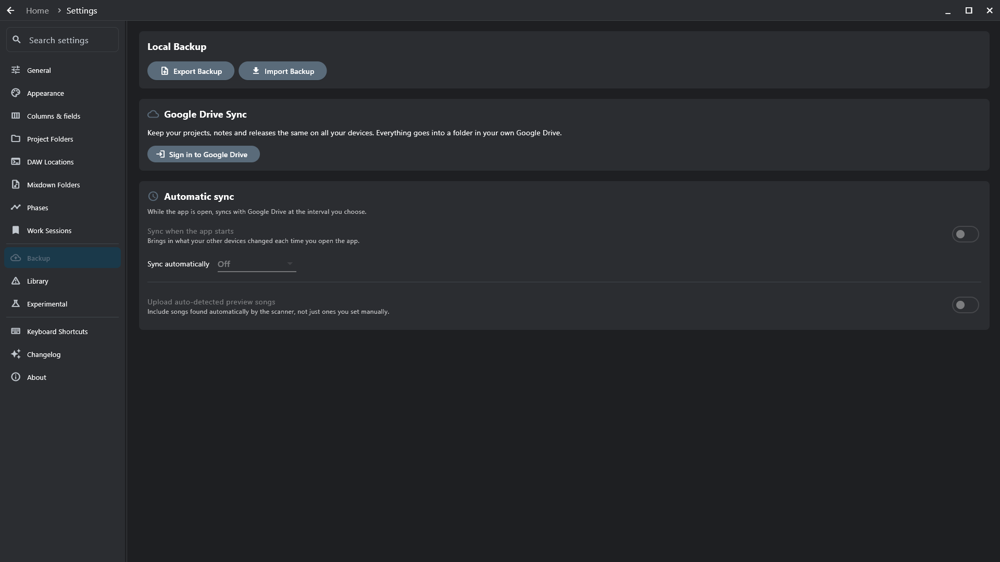
Archive
A finished song out of the way: its folder zipped somewhere else — and, if you choose, the originals deleted, only once the zip has been checked file by file. It stays in the library — Show archived — with everything you wrote about it, and restores where it came from.
Right-click → Archive…
Recently deleted
Deleting a project from the library keeps it for 30 days — notes, to-dos, work time, MIDI — under Settings → Project Folders. Its files on disk are never touched.
Profiles
One per artist name — solo, alias, collaboration — each with its own folders, projects and releases. Click your profile at the top of the side rail.
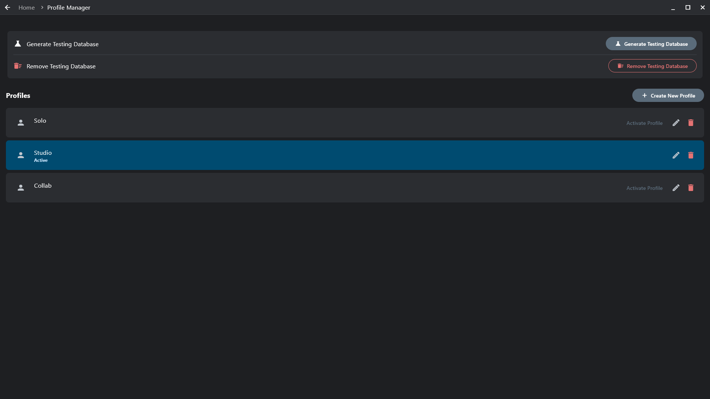
- Move to profile… (right-click a project) hands a song to another profile — all its versions, details and MIDI, files moved or left in place.
Settings
One page, a menu on the left, and a search box at the top.
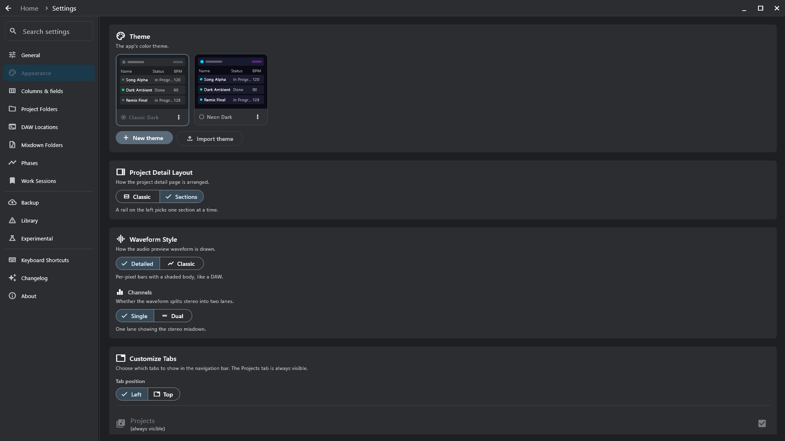
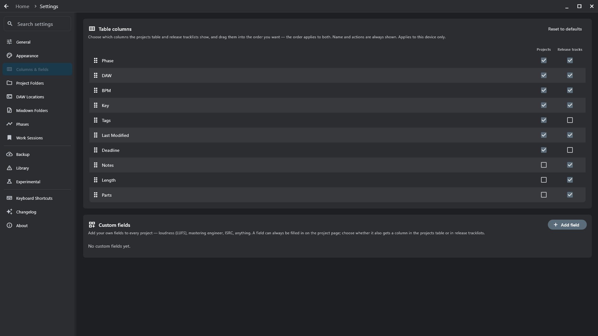
- DAW Locations — which program opens which DAW's projects (needed on Linux).
- Mixdown Folders — where to look for a project's exported mix.
- Work Sessions — Session Mode and reminders.
- About — version, check for updates, report an issue, the diagnostic log.
Tray mode
Close the window and the app keeps running in the tray (menu bar on macOS) — syncs and work sessions go on. The tray menu shows the last sync, syncs now, pauses the session, quits.
Shortcuts
Cmd on macOS where it says Ctrl. The full list is in the app: Settings → Keyboard Shortcuts.
| Ctrl F | Search |
| Ctrl R | Rescan |
| Ctrl T | Go to the projects table |
| ↑ ↓ | Move between projects |
| Enter or D | Open the project's page |
| P | Play / pause its mixdown |
| O | Open in its DAW |
| F | Open its folder |
| Alt ← | Back (Cmd ← on macOS) |
| Space, ← → | In a player: play / pause, seek 5 s (with Ctrl: 30 s) |
Supported DAWs
Every one is found and listed. The highlighted ones are also read inside — anything else, type in once.
Ableton Livetempo · key · version · tracks · plug-ins · MIDI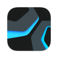
Studio Onetempo · version · tracks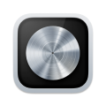
Logic Protempo · key · version (on macOS) MAGDAtempo · key · version
MAGDAtempo · key · version LUNAlisted
LUNAlisted Cakewalk / Sonarlisted
Cakewalk / Sonarlisted Waveformlisted
Waveformlisted GarageBandlisted
GarageBandlisted Reasonlisted
Reasonlisted Ardourlisted
Ardourlisted Renoiselisted
Renoiselisted Mixcraftlisted
Mixcraftlisted ACID Prolisted
ACID Prolisted Samplitudelisted
Samplitudelisted Digital Performerlisted
Digital Performerlisted Auditionlisted
Auditionlisted Audacitylisted
Audacitylisted LMMSlisted
LMMSlisted Qtractorlisted
Qtractorlisted Rosegardenlisted
Rosegardenlisted Zrythmlisted
ZrythmlistedWhat's read from each DAW
A deep scan reads these straight from the project file. The same table is in the app: Settings → General → Metadata Extraction.
| Tempo | Key | Version | Notes | Markers | Tracks | Plug-ins | MIDI clips | MIDI events | |
|---|---|---|---|---|---|---|---|---|---|
| Ableton Live | ✓ | ✓ | ✓ | ✓ | ✓ | ✓ | ✓ | ||
| Cubase | ✓ | ✓ | ✓ | ✓ | ✓ | ✓ | ✓ | ||
| Nuendo | ✓ | ✓ | ✓ | ✓ | ✓ | ✓ | ✓ | ||
| FL Studio | ✓ | ✓ | ✓ | ✓ | ✓ | ||||
| Reaper | ✓ | ✓ | ✓ | ✓ | ✓ | ✓ | ✓ | ✓ | ✓ |
| Studio One | ✓ | ✓ | ✓ | ||||||
| Bitwig Studio | ✓ | ✓ | ✓ | ||||||
| Logic Pro (on macOS) | ✓ | ✓ | ✓ | ||||||
| MAGDA | ✓ | ✓ | ✓ |
- Tracks are counted by kind — audio, MIDI, instrument, sampler, groups, folders. Plug-ins lists every one the project loads; search the dashboard for one to find every song that uses it.
- MIDI events are controllers, pitch bend and aftertouch, read with the notes.
- Every other DAW is listed and scanned; its tempo and key are yours to type in — or put a
bpm.txt/key.txtnext to the project.
Nothing in the guide matches — try another word.